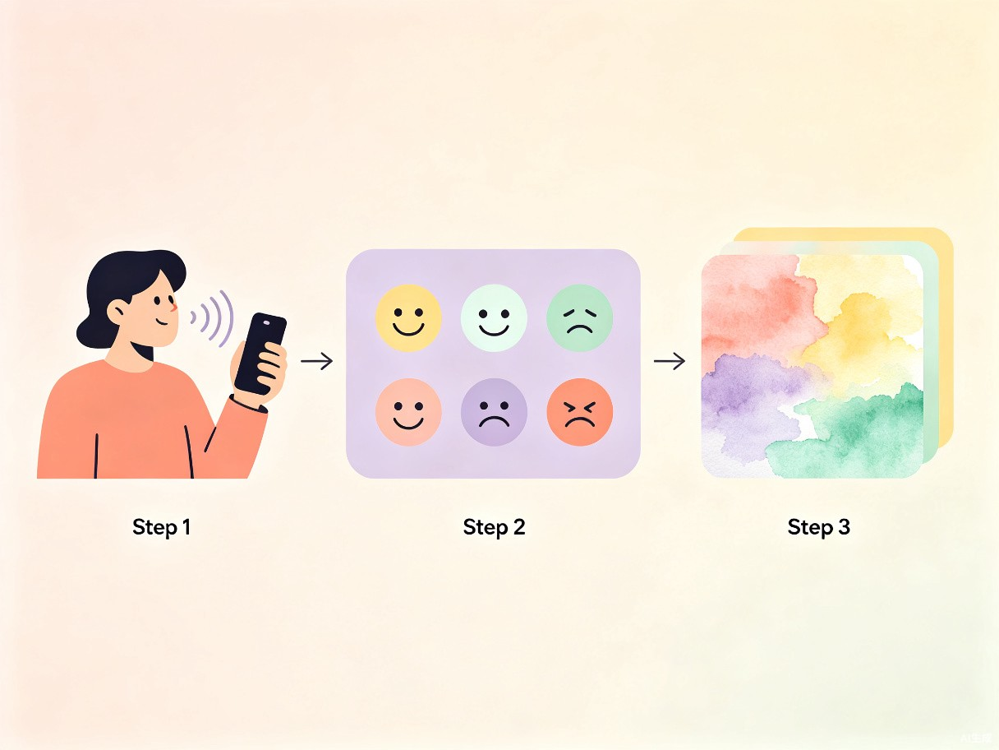
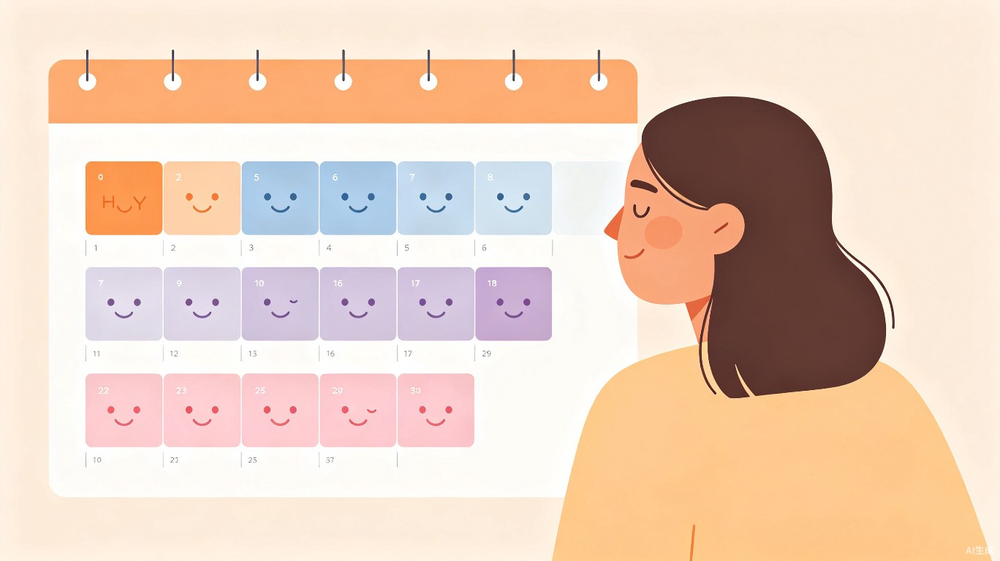

创意名称 + 创意介绍
创意名称
「情绪画记」—— AI情绪可视化日记
想解决什么问题
当代年轻人普遍面临情绪表达困境：工作学习压力大，内心积压了许多感受却无处倾诉；传统文字日记门槛高、难坚持；社交媒体分享又存在隐私顾虑。很多人想记录情绪，但缺乏一个低门槛、有温度、保护隐私的工具。
为什么会想到做这个
灵感来源于身边朋友的倾诉——"我知道应该记录自己的情绪，但每次打开日记本就不知道写什么"。同时，AI图像生成技术的成熟让我们看到了新的可能：如果不用文字，而是用一幅画来记录今天的心情呢？
大概是什么产品
一款移动端Web应用（也可封装为小程序）。用户通过语音或简短文字描述今天的心情，AI自动分析情绪类型与强度，生成一幅风格化的情绪插画，并自动归档到情绪日历中，形成个人专属的情绪可视化档案。
核心特色：语音输入 + AI情绪分析 + 自动生成情绪插画 + 情绪日历可视化。整个过程不超过30秒，让情绪记录变得轻松自然。
核心功能流程
语音 / 文字输入
说一段今天的心情
或写几句感受
AI 情绪分析
识别情绪类型与强度
（开心/平静/焦虑/低落...）
生成情绪插画
根据情绪生成
专属风格化画作
情绪日历归档
自动记录到日历
形成情绪画像

目标用户及痛点
面向哪些用户
大学生 / 应届生
面临学业压力、就业焦虑、社交困扰，需要情绪出口
职场新人
工作节奏快、压力大，下班后没有精力写长篇日记
创意工作者
对视觉表达敏感，喜欢用图像而非文字记录生活
关注心理健康人群
有情绪觉察意识，希望定期记录和回溯自己的心理状态
当前痛点
- 传统日记门槛高：需要写大量文字，大多数人坚持不到一周就放弃
- 社交平台无隐私：在朋友圈/微博分享情绪，需要顾虑他人看法
- 情绪难以量化：只记"今天不开心"，无法回溯情绪变化趋势
- 缺乏正向激励：记录过程枯燥，没有视觉反馈和成就感
情绪日历可视化
每幅情绪画作自动归档到日历中，用不同颜色标识情绪类型。用户可以回溯任意一天的"心情画作"，也可以按月查看情绪变化趋势，帮助更好地认识自己的情绪模式。

| 情绪类型 | 日历颜色 | 插画风格 | 示例触发词 |
|---|---|---|---|
| 开心 | 暖橙色 | 明亮水彩，暖色调 | "今天和朋友聚餐了""收到好消息" |
| 平静 | 天蓝色 | 柔和渐变，冷色调 | "今天看了会儿书""天气很好" |
| 焦虑 | 淡紫色 | 抽象线条，深色调 | "明天要考试了""事情好多做不完" |
| 低落 | 灰蓝色 | 雨景、阴天风格 | "今天不太想说话""有点累" |
| 感恩 | 淡粉色 | 温暖光晕，柔焦风格 | "感谢室友帮我带饭""好幸福" |
价值与意义
社会价值：降低情绪记录门槛，促进心理健康
世界卫生组织数据显示，全球约有3亿人受抑郁症困扰，而情绪觉察是心理健康的"第一道防线"。情绪画记通过语音输入 + AI图像生成的方式，将情绪记录的门槛降至最低，帮助更多人养成情绪觉察的习惯。
体验价值：用视觉取代文字，让记录变成期待
每天生成一幅专属的情绪画作，让记录过程本身成为一种治愈和奖励。用户不是因为"应该记录"而打开APP，而是因为"想知道今天的心情会变成什么样的画"。
数据价值：长期积累，形成个人情绪画像
通过情绪日历的长期数据积累，用户可以直观看到自己的情绪周期、情绪触发因素，帮助科学地认识和管理自己的情绪状态。
技术实现方案
语音识别
Web Speech API / 浏览器原生语音输入，无需额外安装
情绪分析
基于NLP的情感分析模型，识别情绪类型和强度
图像生成
AI图像生成API，根据情绪关键词生成风格化插画
前端展示
响应式Web应用，支持手机/平板/桌面访问
让每一天的心情，都值得被看见
情绪画记——用AI为你的情绪画一幅画，让记录变成一种治愈。